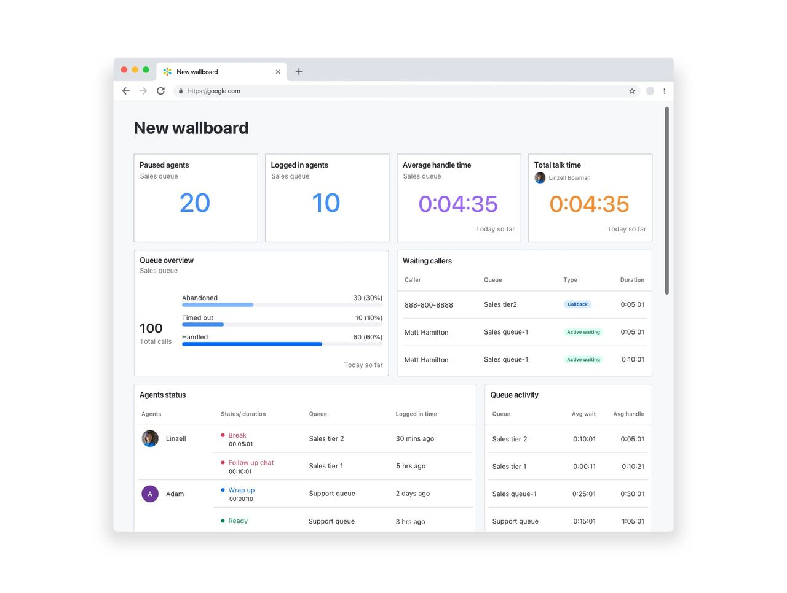
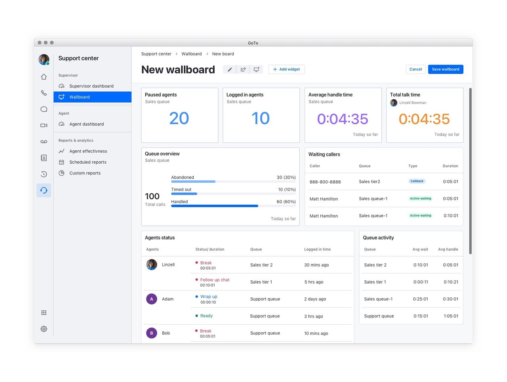

A shared view.
Configured your way.
Connecting the metrics a team wants to see with the tools to build, manage, and share that view.
- Work
- Interaction & visual design
- Product
- Configurable wallboard
- Platform
- Desktop dashboard & casting
- Focus
- Configuration & shared visibility

01 / Context
A dashboard should reflect
the team’s priorities.
The wallboard was designed to give supervisors and team members a shared view of business performance, with metrics configured around their needs.
That called for more than a finished dashboard. The experience needed a way to choose the information, edit its presentation, keep multiple boards organized, and make the result visible to others.
Connect personal configuration with a shared team view, without treating building and sharing as unrelated tasks.
02 / Configuration
Build the view
one widget at a time.
Adding and editing widgets gave the wallboard its flexibility. Each widget could carry a specific metric, while the board brought them together.



These original GIFs use stepped screen changes. The silent videos preserve that pacing and loop while visible. Use the controls to pause; reduced-motion preferences disable automatic playback.

03 / Manage & share
The board is only useful
if people can find it.
The board list supported creating, editing, archiving, deleting, and casting wallboards. Sharing was available from both the list and an individual board.
Configuration and management served different moments: one shaped the content, while the other organized the collection and controlled how a board reached its audience.


04 / Scope & evidence
A complete path
from setup to shared view.
The source connects configurable widgets, wallboard management, sharing, and casting. This case focuses on that interaction structure and the original visual designs.
A shared understanding of team performance was the product goal. The supplied material does not include research-method details or outcome measurements, so this case does not claim improved team performance or a quantified adoption result.
Sources and scope notes
Adapted from the GoTo configurable wallboard sequence, dated Q1 2021. The source credits interaction and visual design. The four original animated GIFs are preserved and available above.
Source links may require Figma access. Public-sharing permissions still need review.
Next case / GoTo